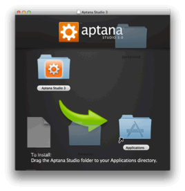
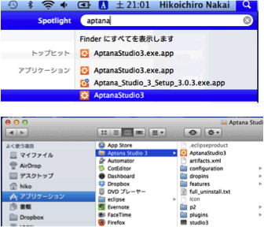
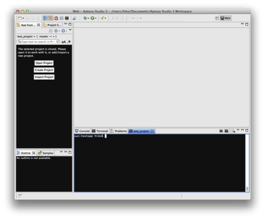

Aptana Studio統合開発環境です。
以下のサイトへアクセスし、Aptana Studio 3をダウンロードします。
http://www.aptana.com/products/studio3/download
ダウンロードしたファイルを開いて、[Aptana Studio 3] ディレクトリをアプリケーションフォルダへドラッグアンドドロップします。

Spotlightまたは、[アプリケーション] ディレクトリから[Aptana Studio 3]を起動します。

以下のような画面が表示されればインストールは成功しています。
